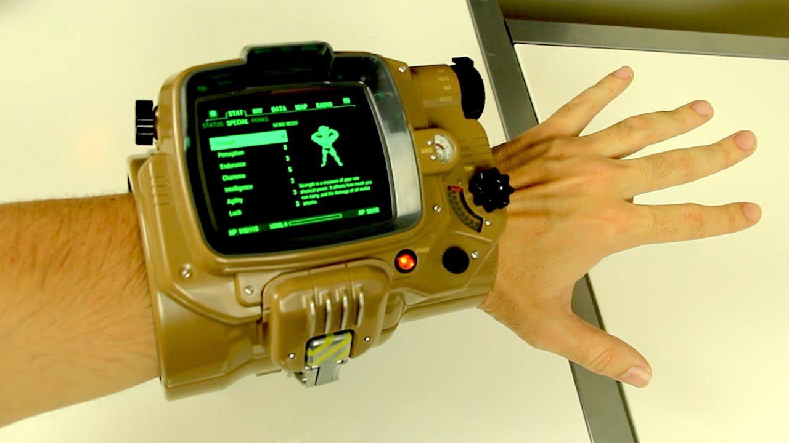
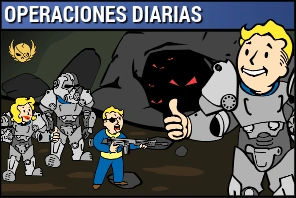
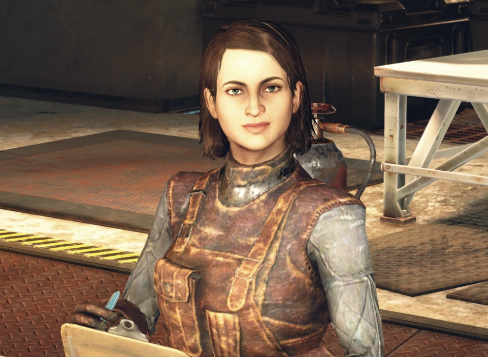

Llega el parche de inventario
Este nuevo parche llega a fllout 76 para ayudar a organizar mejor nuestro inventario
entre otras cosas. A continuacion las novedades mas importantes:
Aumento del alijo, de 800 a 1200.
Nuevas pestañas en el Pip-Boy, ahora armaduras y atuendos estan por separado y
comida y bebida estan esparadas de ayuda, lo cual agilizara mucho la busqueda de
nuestros objetos. tambien se incorpora la pestaña "nuevo" donde encontramos los
ultimos items recogidos en la sesion actual ordenados en el orden en el que se
recogen.
Nueva funcion "peso apilado" nos muestra el peso total de un item que tengamos en
cantidad (Tip: atentos con los items de ayuda y comida y bebida, que suelen ser
los que mas se acomulan sin darse cuenta!).
Tambien encontraremos mejoras en la interfaz de la vista en mapa de las maquinas vendedoras de los jugadores. Ahora aparecen diferenciadas armas y armaduras por cantidad de estrellas legendarias, lo cual sin duda nos horrara muchos viajes rapidos.

Operaciones diarias
A partir de esta actualizacion al completar una operacion diaria alcanzando el rango de "maestre" se garantizara la obtencion de al menos un objeto de entre las recompensas poco comunes.
Conocimento prohibido
La conocida mision ha sido reactivada luego de haber solucionado los problemas con los datos tecnicos. Y ahora no solo pueden depositarse en campamento aventura, tambien son recibidos en Fuerte Atlas por la escriba Odessa Valdez de la hermandad del Acero, a quien vemos en la siguiente imagen.
Consejo diario: no olvides llevar siempre un poco de Rad-X por si te topas con una tormenta radioactiva ;-)
Novedades en la tienda atomica
En la tienda atomica se ha añadido una opcion para que muestre solo los items que no hemos comprado, para facilitar la navegacion y mejorar la visualizacion.
Esta semana encontraremos las siguientes novedades:
Camara de habitaciones de refugio
1500 atomos
Conjunto de sofas modulares
500 atomos
Servoarmadura de ranger del parque
1200 atomos
Ademas de muchas ofertas entre las que destacan los letreros de quantum, old possum y
pickaxe, conjunto de bar elegante, conjunto de barra de slocum's Joe, entre otras.

Evento por tiempo limitado!
No olvides reclamar la skin gratuita del "Rompecorazones" para la llave Grifa y participar del evento "muero de amor" donde deberas completar desafios diarios y semanales que otorgaran recomensas como tarteras, kits de reparacion, sobres de "perks", y objetos de tiempo limitado (atuendo de RobCo, Bungalo rustico y Casco de pescador de langostas)